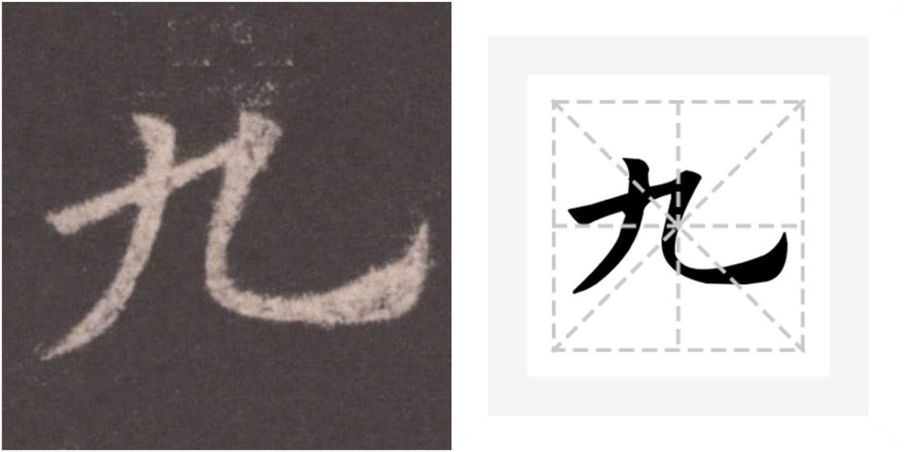
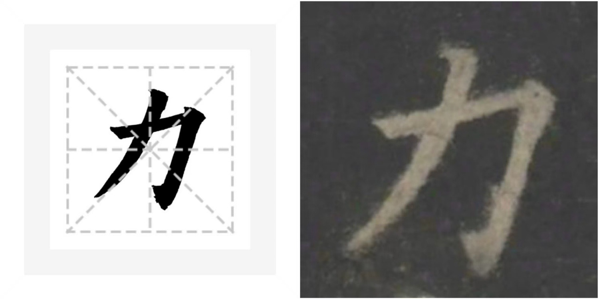
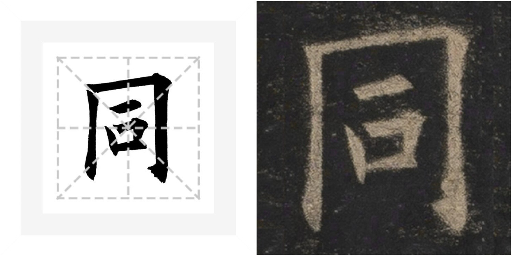
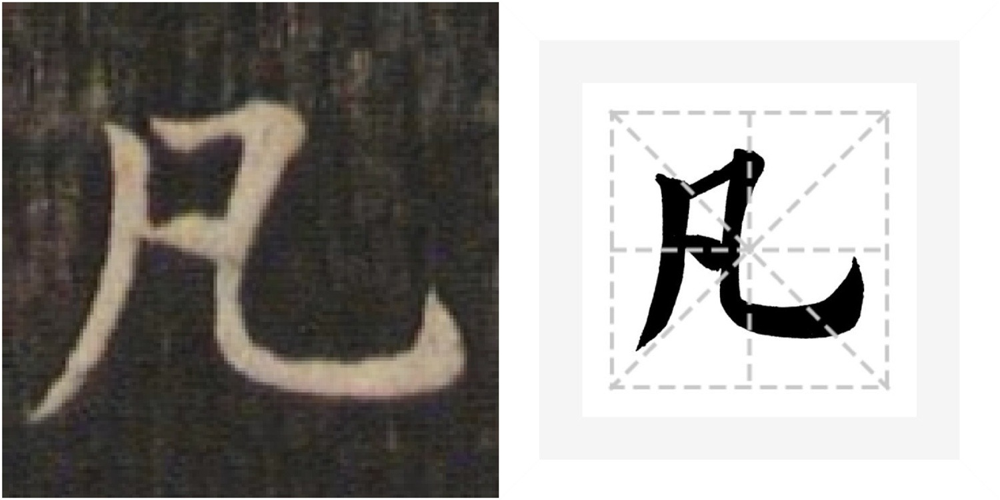

北魏历史速记
基本信息
- 朝代：北魏（北朝首代王朝）
- 时期：魏晋南北朝·北朝
- 存续时间：386年—534年（共148年）
- 建立者：拓跋珪（鲜卑拓跋部）
- 结局：534年分裂为东魏、西魏
关键历史节点
386年：拓跋珪建魏
鲜卑拓跋部首领拓跋珪在牛川称代王，同年改国号为魏，史称北魏。
439年：拓跋焘统一北方
太武帝拓跋焘消灭北凉，结束"五胡十六国"分裂局面，统一北方。
485-494年：孝文帝汉化改革
推行均田制、三长制、班禄制，494年迁都洛阳，全面汉化。
534年：北魏分裂
北魏分裂为东魏（高欢）、西魏（宇文泰），北魏正式灭亡。
北魏主要历史功绩
政治统一
结束北方百年战乱，为隋唐大一统奠定基础，完善均田制、三长制等制度。
民族融合
迁都洛阳、说汉话、改汉姓、穿汉服、通汉婚，促进鲜卑与汉民族深度融合。
文化艺术
云冈石窟、龙门石窟等佛教艺术巅峰，魏碑书法成为楷书发展重要阶段。
制度奠基
均田制、三长制、班禄制等制度创新，影响后世数百年。
魏碑书法艺术
魏碑风格特点
- 隶意尚存：部分笔画保留隶书波磔感，上承汉隶
- 方笔为主：起笔切笔，棱角分明，如斩钉截铁
- 斜画紧结：横画左低右高，字形欹侧，险中求正
- 中宫收紧：笔画紧凑，主笔舒展，疏密有致
- 金石气：刀刻与笔意结合，线条雄强苍劲
魏碑是隶书向楷书过渡的重要阶段，"上承汉隶，下启唐楷"，为楷书发展奠定基础。
魏碑临写要点
用笔技巧
起笔重顿，行笔稳健，收笔顿挫有力。转折处方中带圆，既有方劲又不失圆润。
结构规律
整体呈左低右高之势，中宫收紧，四周舒展。注意笔画间的呼应关系，形成环抱之势。
金石质感
模仿碑刻效果，线条粗细变化自然，避免过于油滑，体现雄强古朴的气息。
精准定位
利用米字格找准笔画位置，把握重心与平衡，做到斜中求正，险中求稳。
魏碑范字解析（九、凡、力、同）
字帖范例原图

九 · 撇高钩低

凡 · 上窄下宽

同 · 框形端正

力 · 斜中求正
九
九
- • 左收右放，撇高钩低
- • 横画左低右高
- • 弯钩圆劲，环抱之势
凡
凡
- • 上窄下宽，外紧内松
- • 撇画舒展，弯钩饱满
- • 左右对称，重心平稳
力
力
- • 撇画劲挺，折角方劲
- • 斜中求正，雄强有力
- • 笔画简练，金石气足
同
同
- • 上开下合，框形端正
- • 横画均匀，竖画劲挺
- • 内宫收紧，外框舒展